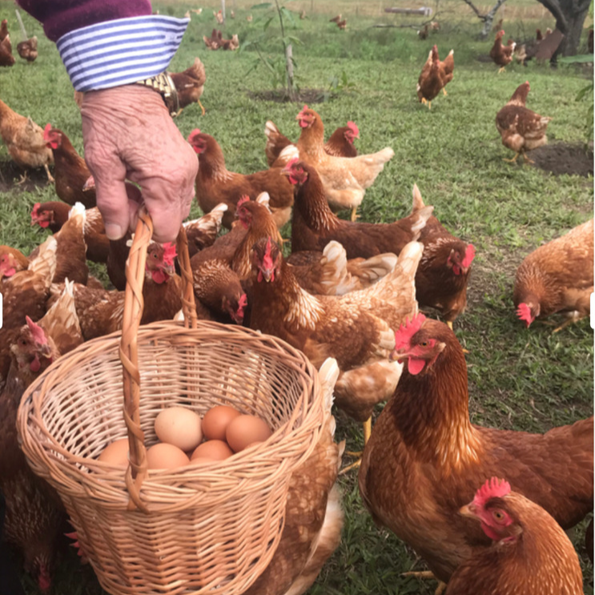

Empezamos en el 2018 con la idea de satisfacer una demanda cada vez más creciente de consumir productos naturales, preservando el bienestar animal. Las gallinas viven en galpones 100% libres de jaulas, con salida hacia el exterior, permitiendo que desarrollen comportamientos naturales como pastorear, comer gusanos, anidar, disfrutar del sol, comer pasturas. Gracias a la alimentación saludable y la vida sin estrés de las gallinas, se consiguen huevos con yema naranja y, sobre todo, mejor sabor. ¡En el 2018 comenzamos con 100 gallinas, y actualmente tenemos 1400!
Doña Tei es mi abuela, tiene 85 años y es una trabajadora incansable. Nos enseñó que con esfuerzo, trabajo y pasión, los sueños se hacen realidad. Ella es la que hace practicamente todo, cuida de las gallinas, embala los huevos y se encarga de la logistica para que ningún cliente se quede sin Huevos Doña Tei.
